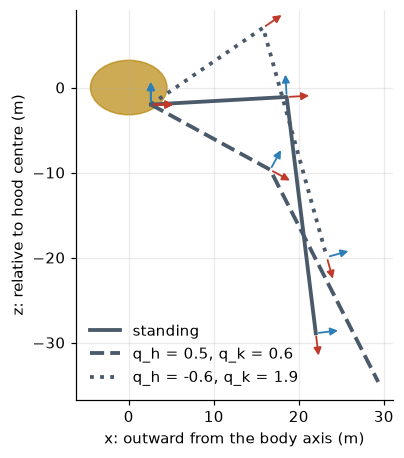

Rotations, homogeneous transforms and the product of exponentials, worked through on a Martian tripod’s leg (part 1 of 4)
A worked introduction to robot forward kinematics: rotation matrices, homogeneous transforms, kinematic chains, workspaces and the product-of-exponentials formula, all checked against a MuJoCo model of a 30-metre tripod.
explainer
robotics
kinematics
python
Author
Paul Milne
Published
October 25, 2026
This is the first of four explainers behind The Martian Tripod: Walking a Fighting-Machine in MuJoCo. That post moved quickly through the mathematics of making a three-legged machine walk. These explainers slow down and work through it properly:
Forward kinematics (this post): given the joint angles, where is the foot?
Inverse kinematics: given where the foot should be, what are the joint angles?
Every formula is checked against the same MuJoCo model the main post uses, a 257-tonne tripod with 16 m thighs and 28 m shins.
Show code
import sys, math, warningsfrom pathlib import Pathwarnings.filterwarnings("ignore")ROOT = Path.cwd().resolve().parents[1] /"martian-tripod"sys.path.insert(0, str(ROOT))import numpy as npimport matplotlib.pyplot as pltimport mujocofrom scipy.linalg import expmfrom tripod.build import writefrom tripod.params import DEFAULT as P, leg_ikfrom tripod.kinematics import foot_fkplt.rcParams.update({"figure.dpi": 110, "axes.grid": True, "grid.alpha": 0.25,"axes.spines.top": False, "axes.spines.right": False})BRASS, STEEL, RED, BLUE, GREEN, GREY ="#b8860b", "#4a5a6a", "#c0392b", "#2c7fb8", "#2ca25f", "#7f8c8d"model = mujoco.MjModel.from_xml_path(str(write()))data = mujoco.MjData(model)mujoco.mj_resetDataKeyframe(model, data, model.key("stand").id)mujoco.mj_forward(model, data)L1, L2 = P.leg.thigh, P.leg.shinprint(f"thigh L1 = {L1:.0f} m, shin L2 = {L2:.0f} m, hips on a {P.hip_radius} m circle, {P.hip_drop} m below the hood centre")
thigh L1 = 16 m, shin L2 = 28 m, hips on a 2.6 m circle, 2.0 m below the hood centre
Joint space and task space
A robot is described in two ways. Its configuration is the list of joint angles, \(\mathbf q = (q_1, \dots, q_n)\); that is what the motors and encoders know. Its task is described in space: where the foot is, which way the hood points. Kinematics is the map between them, ignoring forces and masses entirely.
Forward kinematics (FK) goes from joints to space, \(\mathbf p = f(\mathbf q)\). It is always easy: there is exactly one answer, found by composing one rigid motion per link. Inverse kinematics goes the other way and is harder: there may be no answer, one, several or infinitely many. That is the subject of part 2. This post builds the tools for FK and applies them to the tripod’s leg.
Rotations
A rotation is a \(3\times 3\) matrix \(R\) whose columns are the rotated frame’s axes, written in the original frame. Those axes stay unit length and mutually perpendicular, so
\[
R^\top R = I, \qquad \det R = +1 .
\]
Matrices with these two properties form the special orthogonal group\(SO(3)\). The inverse of a rotation is just its transpose, which is why \(R^\top\) appears so often below. The three basic rotations about the coordinate axes are
Rotations do not commute.\(R_y(a)R_z(b) \ne R_z(b)R_y(a)\) in general, so the order of joints along the chain matters.
A positive rotation about \(+y\) tips the \(x\)-axis down.\(R_y(\theta)\) sends \((1,0,0)\) to \((\cos\theta, 0, -\sin\theta)\). The tripod’s hip and knee hinges both turn about their local \(+y\) axis, so a positive hip angle swings the thigh downward. This sign convention trips up almost everyone the first time.
R^T R = I: True det R = 1.0
Ry(30 deg) applied to the x-axis: [ 0.866 0. -0.5 ]
order matters: |Ry Rz - Rz Ry| = 0.344
Homogeneous transforms
A rigid motion is a rotation followed by a translation, \(\mathbf x \mapsto R\mathbf x + \mathbf t\). Writing points as \((\mathbf x, 1)\) turns this into a single matrix product:
\[
T = \begin{pmatrix} R & \mathbf t \\ \mathbf 0^\top & 1\end{pmatrix}, \qquad
T\begin{pmatrix}\mathbf x\\1\end{pmatrix} = \begin{pmatrix}R\mathbf x + \mathbf t\\1\end{pmatrix}.
\]
These \(4\times 4\) matrices form the special Euclidean group\(SE(3)\). Read \({}^{A}T_{B}\) as “the pose of frame \(B\) in frame \(A\)”. Poses then chain like fractions cancelling,
\[
{}^{A}T_{C} = {}^{A}T_{B}\;{}^{B}T_{C},
\]
and the inverse is cheap: \({}^{B}T_{A} = \begin{pmatrix}R^\top & -R^\top\mathbf t\\ \mathbf 0^\top & 1\end{pmatrix}\).
That chain rule is all of forward kinematics. Give every link a frame and write each frame’s pose relative to its parent. That pose is a fixed offset (the link’s geometry) times a rotation by the joint angle. Then multiply down the chain.
One leg, link by link
Each leg hangs from the underside of the hood. Its chain, from the hood’s centre to the foot, is:
Because the hip and knee both turn about the same \(y\) axis, their angles add. The thigh’s direction is set by \(q_h\) and the shin’s by \(q_h + q_k\). In terms of elevation angles above the horizontal, \(\phi_1 = -q_h\) for the thigh and \(\phi_2 = -(q_h + q_k)\) for the shin. The foot, in the leg’s own vertical plane, is then
\[
\begin{aligned}
\rho &= L_1\cos\phi_1 + L_2\cos\phi_2 && \text{(horizontal reach from the hip)}\\
z &= L_1\sin\phi_1 + L_2\sin\phi_2 && \text{(height relative to the hip)}
\end{aligned}
\]
This closed form is what the project’s kinematics.foot_fk computes. Below, the same thing is built by brute-force matrix multiplication, so the two can be checked against each other.
Show code
def T(R=np.eye(3), t=(0, 0, 0)): M = np.eye(4); M[:3, :3] = R; M[:3, 3] = t;return Mdef leg_chain(i, q, T_hood=np.eye(4)):"""All the frames along leg i, as a list of 4x4 poses in the world.""" psi, qh, qk = q az = math.radians(P.leg_azimuths_deg[i]) m = (P.hip_radius*math.cos(az), P.hip_radius*math.sin(az), -P.hip_drop) frames = [T_hood]for step in (T(Rz(az), m), T(Rz(psi)), T(Ry(qh)), T(t=(L1, 0, 0)), T(Ry(qk)), T(t=(L2, 0, 0))): frames.append(frames[-1] @ step)return framesq_stand = (0.0, *leg_ik(P))foot_h = leg_chain(0, q_stand)[-1][:3, 3]foot_c = foot_fk(P, 0, np.zeros(3), np.eye(3), q_stand)print("standing angles: yaw 0, hip {:.1f} deg, knee {:.1f} deg".format(*map(math.degrees, q_stand[1:])))print("foot from the transform chain:", np.round(foot_h, 6))print("foot from the closed form: ", np.round(foot_c, 6))
standing angles: yaw 0, hip -3.2 deg, knee 86.2 deg
foot from the transform chain: [ 22. 0. -28.9]
foot from the closed form: [ 22. 0. -28.9]
With the hood at the origin, the standing foot sits 22 m out and 28.9 m down, in the foot sphere’s centre. The hip angle is slightly negative: the thigh points 3° above horizontal, and the knee folds the shin down through 86° to stand almost vertical.
Show code
fig, ax = plt.subplots(figsize=(8.5, 4.6))configs = [(q_stand, "-", "standing"), ((0, 0.5, 0.6), "--", "q_h = 0.5, q_k = 0.6"), ((0, -0.6, 1.9), ":", "q_h = -0.6, q_k = 1.9")]for q, ls, lab in configs: fr = leg_chain(0, q) pts = np.array([f[:3, 3] for f in fr])[1:] ax.plot(pts[:, 0], pts[:, 2], ls, color=STEEL, lw=2.5, label=lab)for f in (fr[1], fr[4], fr[6]): o = f[:3, 3]for col, axis in ((RED, 0), (BLUE, 2)): d = f[:3, axis]*3 ax.annotate("", xy=(o[0] + d[0], o[2] + d[2]), xytext=(o[0], o[2]), arrowprops=dict(arrowstyle="-|>", color=col, lw=1.2))ax.add_patch(plt.matplotlib.patches.Ellipse((0, 0), 2*P.hood_radius, 2*P.hood_height, color=BRASS, alpha=0.7))ax.set_aspect("equal"); ax.set_xlabel("x: outward from the body axis (m)"); ax.set_ylabel("z: relative to hood centre (m)")ax.legend(frameon=False, loc="lower left"); plt.show()

Figure 1: The leg in its own plane, drawn by the transform chain for three configurations. Small arrows are each frame’s x (red) and z (blue) axes. The hip angle tilts the whole leg; the knee angle bends only the shin. Both rotate about the y axis, which points into the page.
The workspace
The workspace is the set of all points the foot can reach. In the leg plane, with no joint limits, the two-link arm reaches exactly the annulus
which for the tripod is between 12 m and 44 m from the hip. The outer rim is the leg fully straight, and the inner rim fully folded. Real joints have limits, though: in the MuJoCo model the hip pitch is limited to \([-1.2, 1.4]\) rad and the knee to \([-0.3, 2.6]\) rad, and the limits carve pieces out of the annulus. The quickest way to see the workspace is to sample joint space and push every sample through FK.
Figure 2: The leg’s workspace in its own plane (hip at the origin). Grey: the ideal annulus. Coloured dots: 20,000 configurations sampled within the model’s joint limits, coloured by knee angle. The black cross is the standing foot; the dashed line is the ground in the standing pose.
yaw limits -0.8 .. +0.8 rad (-46 .. +46 deg)
hip limits -1.2 .. +1.4 rad (-69 .. +80 deg)
knee limits -0.3 .. +2.6 rad (-17 .. +149 deg)
Three features of the picture matter later.
The workspace is a crescent, not the annulus. The knee limit of 2.6 rad (149°) stops the leg folding completely, so the inner rim is never reached. The hip limits stop the leg swinging right round, so the crescent runs from the leg pointing nearly straight up to the foot curled in under the body.
The knee almost never bends backwards. Its range is \([-0.3, 2.6]\), so it can only overextend by 17°. Positive knee angles are the knee-up shape. A point in the workspace can usually be reached by a knee-up and a knee-down configuration, but here the knee-down one only exists in a thin sliver along the outer rim. The joint limits have nearly removed the ambiguity that part 2 has to resolve.
The stance sits well inside the workspace, with margin in every direction. That margin is what lets the hood rise, sway and tilt while the feet stay planted.
Adding the yaw sweeps this plane through \(\pm 0.8\) rad (\(\pm 46^\circ\)) about the vertical through the hip. The 3-D workspace is a thick wedge of a spherical shell. Three such wedges, one per leg at 120° apart, overlap only a little. Each foot has its own patch of ground, and a gait has to keep every foot inside its own patch.
Checking against MuJoCo
MuJoCo builds the same chain from the model file. Each <body> has a position and orientation relative to its parent, and each <joint> adds a rotation about its axis. mj_kinematics multiplies everything down the tree and stores every body’s world pose in data.xpos and data.xmat.
There is one subtlety in the configuration vector. The hood is attached to the world by a free joint: three translations and an orientation stored as a unit quaternion\((w, x, y, z)\). A quaternion has four numbers but only three degrees of freedom, so qpos (the positions) has one more entry than qvel (the velocities).
Show code
print(f"model: nq = {model.nq} position coordinates, nv = {model.nv} velocity coordinates")print("free joint qpos (x, y, z, qw, qx, qy, qz):", np.round(data.qpos[:7], 3))qadr = [model.joint(f"leg{i}_yaw").qposadr[0] for i inrange(3)]hood = model.body("hood").iderrs = {0: [], 1: [], 2: []}for trial inrange(300): data.qpos[:3] = rng.uniform(-20, 20, 3) + [0, 0, 30] quat = rng.normal(size=4); data.qpos[3:7] = quat/np.linalg.norm(quat) # random hood orientationfor i inrange(3): data.qpos[qadr[i]:qadr[i] +3] = [rng.uniform(*lim[j]) for j in ("yaw", "hip", "knee")] mujoco.mj_kinematics(model, data) T_hood = T(data.xmat[hood].reshape(3, 3), data.xpos[hood])for i inrange(3): mine = leg_chain(i, data.qpos[qadr[i]:qadr[i] +3], T_hood)[-1][:3, 3] errs[i].append(np.linalg.norm(mine - data.site_xpos[model.site(f"foot{i}").id]))for i inrange(3):print(f"leg {i} (azimuth {P.leg_azimuths_deg[i]:3.0f} deg): max |FK - MuJoCo| over 300 random poses = {max(errs[i]):.1e} m")
model: nq = 58 position coordinates, nv = 57 velocity coordinates
free joint qpos (x, y, z, qw, qx, qy, qz): [ 0. 0. 30. 1. 0. 0. 0.]
leg 0 (azimuth 0 deg): max |FK - MuJoCo| over 300 random poses = 2.8e-14 m
leg 1 (azimuth 120 deg): max |FK - MuJoCo| over 300 random poses = 2.1e-04 m
leg 2 (azimuth 240 deg): max |FK - MuJoCo| over 300 random poses = 1.0e-05 m
The transform chain agrees with MuJoCo to within a fraction of a millimetre across 300 random poses, with the hood flung about at random orientations. Leg 0 agrees to machine precision. The tiny residual on legs 1 and 2 is not a kinematics error: the model file writes each mount’s azimuth with six significant figures (2.0944 rad for 120°). A rounding error of a few millionths of a radian, swung through a 44 m leg, moves the foot a tenth of a millimetre.
Another way to write it: the product of exponentials
The link-by-link chain needs a frame on every link. A more modern formulation, the product of exponentials (Brockett, 1984; the standard form in Lynch & Park’s Modern Robotics), needs only two things:
the home pose\(M\) of the foot when every joint is at zero;
for each joint, its screw axis\(\mathcal S_j = (\boldsymbol\omega_j, \mathbf v_j)\) in the home configuration. For a hinge, \(\boldsymbol\omega_j\) is the unit axis direction and \(\mathbf v_j = -\boldsymbol\omega_j\times\mathbf r_j\), where \(\mathbf r_j\) is any point on the axis.
where \([\boldsymbol\omega]\) is the skew-symmetric matrix with \([\boldsymbol\omega]\mathbf x = \boldsymbol\omega\times\mathbf x\), and the exponential is the matrix exponential. Each factor is “rotate everything beyond joint \(j\) about joint \(j\)’s axis by \(q_j\)”, applied from the tip backwards. No intermediate frames are needed. The screw axes are also exactly the columns of the Jacobian at the home pose, which part 3 builds on.
For leg 0 the axes are simple. The yaw is a vertical axis through the hip at \(\mathbf r = (2.6, 0, -2)\). At home, the hip and knee are horizontal \(y\)-axes through the hip and through the point 16 m further out.
Show code
def skew(w):return np.array([[0, -w[2], w[1]], [w[2], 0, -w[0]], [-w[1], w[0], 0]])def screw(w, r): w = np.asarray(w, float); v =-np.cross(w, r) S = np.zeros((4, 4)); S[:3, :3] = skew(w); S[:3, 3] = vreturn Ship = np.array([P.hip_radius, 0, -P.hip_drop])axes = [screw((0, 0, 1), hip), screw((0, 1, 0), hip), screw((0, 1, 0), hip + [L1, 0, 0])]M_home = T(t=hip + [L1 + L2, 0, 0])def fk_poe(q): out = np.eye(4)for S, qj inzip(axes, q): out = out @ expm(S*qj)return out @ M_homeworst =0.0for trial inrange(300): q = [rng.uniform(*lim[j]) for j in ("yaw", "hip", "knee")] worst =max(worst, np.linalg.norm(fk_poe(q)[:3, 3] - leg_chain(0, q)[-1][:3, 3]))print(f"product of exponentials vs transform chain, 300 random configurations: max difference {worst:.1e} m")
product of exponentials vs transform chain, 300 random configurations: max difference 9.3e-14 m
The two formulations agree to rounding error. The PoE form is popular for exactly this reason: it is defined by physical axes you can point at on the machine, it has no special-case conventions, and its Jacobian falls straight out of it.
What about Denavit–Hartenberg parameters?
Older textbooks and many industrial controllers describe chains with Denavit–Hartenberg (DH) parameters. That is four numbers per joint \((a, \alpha, d, \theta)\), which fix each link’s frame by a strict convention: \(z\) along the joint axis, \(x\) along the common normal to the next axis. DH is compact, but the conventions (there are two incompatible ones, “standard” and “modified”) are a famous source of errors. MuJoCo, URDF and most modern software instead give each link an arbitrary pose relative to its parent, as in the table above. The PoE form avoids link frames altogether.
Velocities: a look ahead
Differentiate the foot position with respect to time and every term picks up a joint velocity:
The matrix \(J\) of partial derivatives is the Jacobian. It turns joint speeds into foot speed and, by a duality explained in part 3, foot forces into joint torques. It is also the engine of numerical inverse kinematics in part 2. Each column is “the foot’s velocity if only this joint moves”. For a hinge, that is \(\boldsymbol\omega_j \times (\mathbf p - \mathbf r_j)\): the foot circles the joint’s axis. A finite-difference check on the standing pose shows the idea:
Show code
q0 = np.array(q_stand); eps =1e-6p0 = leg_chain(0, q0)[-1][:3, 3]J_fd = np.column_stack([(leg_chain(0, q0 + eps*np.eye(3)[j])[-1][:3, 3] - p0)/eps for j inrange(3)])fr = leg_chain(0, q0)r = [fr[1][:3, 3], fr[3][:3, 3], fr[5][:3, 3]] # points on the yaw, hip and knee axesw = [fr[1][:3, 2], fr[3][:3, 1], fr[5][:3, 1]] # their axis directionsJ_geo = np.column_stack([np.cross(w[j], p0 - r[j]) for j inrange(3)])np.set_printoptions(precision=2, suppress=True)print("finite differences (m/rad):\n", J_fd)print("axis x lever, column by column:\n", J_geo)print(f"max difference {np.abs(J_fd - J_geo).max():.1e}")
Yaw moves the foot purely sideways (\(y\)), at 19.4 m/rad. That is its horizontal distance from the yaw axis.
Hip moves the foot inward (26.9 m/rad) and down (19.4 m/rad). Positive \(q_h\) swings the whole leg downward round the hip. The foot is far below the hip, so it swings back towards the body as well as dropping. The downward part equals the foot’s horizontal reach from the hip, the lever arm.
Knee moves the foot almost purely horizontally. The shin hangs nearly vertically below the knee, so turning the knee swings the foot sideways along a near-horizontal arc.
That last point has consequences. Raising or lowering the foot with the knee is very inefficient, while pushing it outward is easy. In part 3 the same structure explains why the hip, not the knee, carries the machine’s weight.
Summary
A configuration is a vector of joint angles; forward kinematics maps it to the pose of a point of interest by composing one rigid transform per link.
Rotations live in \(SO(3)\) (\(R^\top R = I\), \(\det R = 1\)); poses live in \(SE(3)\) and chain by matrix multiplication.
The tripod’s leg is yaw–pitch–pitch: a yaw that turns a vertical plane, inside which a two-link arm reaches an annulus between 12 m and 44 m, trimmed by joint limits.
The hand-built chain, the closed form and the product of exponentials all agree with MuJoCo to within the precision of the model file.
Differentiating FK gives the Jacobian, which the next three parts lean on heavily.
Next:Inverse kinematics, turning a desired foot position back into joint angles.
Further reading
K. M. Lynch and F. C. Park, Modern Robotics: Mechanics, Planning, and Control (Cambridge, 2017), chapters 3–4. Free online, and the clearest treatment of the product of exponentials.
B. Siciliano, L. Sciavicco, L. Villani and G. Oriolo, Robotics: Modelling, Planning and Control (Springer, 2009), chapter 2, for the DH convention.
The MuJoCo documentation, “Computation” and “XML reference” chapters, for how bodies, joints and the free-joint quaternion are laid out.